Sudan
our Sudan

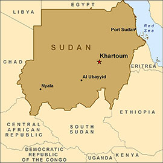

| Sudan's flag |
Map of Sudan |
map of africa |
Sudan (US: /suˈdæn/ (About this soundlisten), UK: /suˈdɑːn, -ˈdæn/;[9][10] Arabic: السودان as-Sūdān), officially the Republic of the Sudan[11] (Arabic: جمهورية السودان Jumhūriyyat as-Sūdān), is a country in Northeast Africa. It is bordered by Egypt to the north, the Red Sea to the northeast, Eritrea to the east, Ethiopia to the southeast, South Sudan to the south, the Central African Republic to the southwest, Chad to the west, and Libya to the northwest. It houses 37 million people (2017)[12] and occupies a total area of 1,861,484 square kilometres (718,722 square miles), making it the third-largest country in Africa.[13] Sudan's predominant religion is Islam,[14] and its official languages are Arabic and English. The capital is Khartoum, located at the confluence of the Blue and White Nile.
Sudan's history goes back to the Pharaonic period, witnessing the kingdom of Kerma (c. 2500 BC–1500 BC), the subsequent rule of the Egyptian New Kingdom (c. 1500 BC–1070 BC) and the rise of the kingdom of Kush (c. 785 BC–350 AD), which would in turn control Egypt itself for nearly a century. After the fall of Kush the Nubians formed the three Christian kingdoms of Nobatia, Makuria and Alodia, with the latter two lasting until around 1500. Between the 14th and 15th centuries much of Sudan was settled by Muslim Arabs. From the 16th–19th centuries, central and eastern Sudan were dominated by the Funj sultanate, while Darfur ruled the west and the Ottomans the far north. This period saw extensive Islamization and Arabization.
From 1820 to 1874 the entirety of Sudan was conquered by the Muhammad Ali dynasty. Between 1881 and 1885 the harsh Egyptian reign was eventually met with a successful revolt led by the self-proclaimed Mahdi Muhammad Ahmad, resulting in the establishment of the Caliphate of Omdurman. This state was eventually destroyed in 1898 by the British, who would then govern Sudan together with Egypt.
The 20th century saw the growth of Sudanese nationalism and in 1953 Britain granted Sudan self-government. Independence was proclaimed on January 1, 1956. Since independence, Sudan has been ruled by a series of unstable parliamentary governments and military regimes. Under Gaafar Nimeiry, Sudan instituted Islamic law in 1983.[15] This exacerbated the rift between the Arab north, the seat of the government and the black African animists and Christians in the south. Differences in language, religion, ethnicity and political power erupted in a civil war between government forces, strongly influenced by the National Islamic Front (NIF) and the southern rebels, whose most influential faction was the Sudan People's Liberation Army (SPLA), eventually concluding in the independence of South Sudan in 2011. Before the Sudanese Civil War, South Sudan was part of Sudan, but it became independent in 2011.[16] Since 2011 Sudan's government is engaged in a war with the Sudan Revolutionary Front. Human rights violations, religious persecution and allegations that Sudan had been a safe haven for terrorists isolated the country from most of the international community. In 1995, the United Nations (UN) imposed sanctions against Sudan.
Agriculture In Sudan
Although cotton remained the most important crop, peanuts, wheat, and sugarcane had become major crops, and significant quantities of sesame also were grown. Rainfed mechanized farming continued to produce mostly sorghum, and short-fiber cotton was also grown
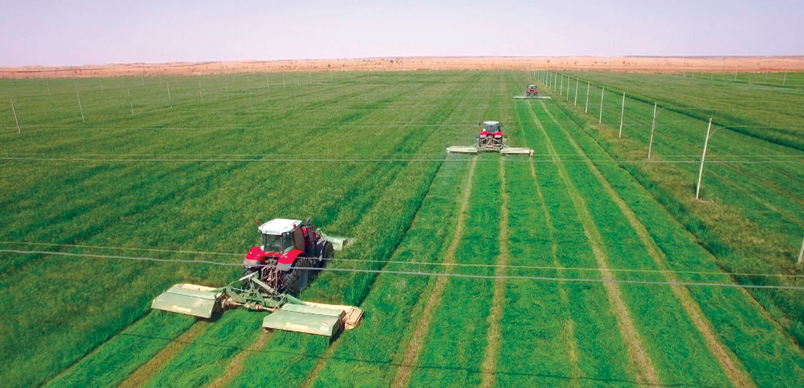
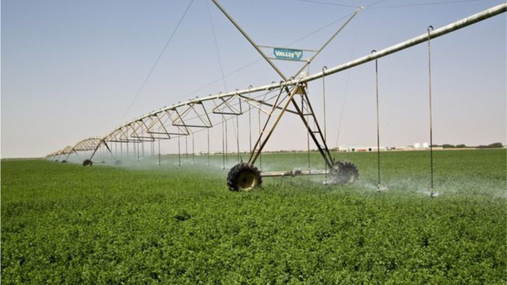
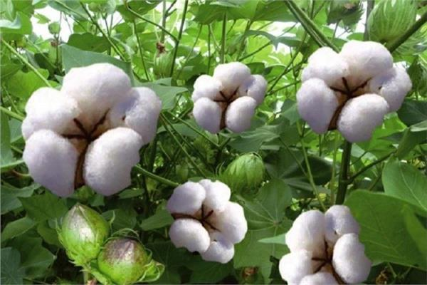
In the early 1990s, agriculture and livestock raising were the main sources of livelihood in Sudan for about 61 percent of the working population.[1] Approximately one-third of the total area of Sudan is suitable for agricultural development and heavier rainfall in the south permits both agriculture and herding by nomadic tribes.
Agricultural products in total account for about 95 percent of the country's exports.[1] In 1998 there was an estimated 16.9 million hectares (41.8 million acres) of arable land and approximately 1.9 million hectares (4.7 million acres) set aside for irrigation, primarily in the north of the country along the banks of the Nile and other rivers. Cash crops (as of 1999) grown under irrigation in these areas include cotton and cottonseed, which is of primary importance to the economy with 172,000 tons and 131,000 tons produced annually respectively,[2]sesame (220,000 tons), sugarcane (5,950,000 tons), peanuts (980,000 tons), dates (176,000 tons), citrus fruits, yams (136,000 tons), tomatoes (240,000 tons), mangoes, coffee, and tobacco.[2] The main subsistence crops produced in Sudan are sorghum (3,045,000 tons), millet (1,499,000 tons), wheat (168,000 tons), cowpeas, beans, pulses, corn (65,000), and barley.[2] Cotton is the principal export crop and an integral part of the country's economy and Sudan is the world's third largest producer of sesame after India and
Animal Wealth In Sudan
The national herd is estimated around 140 million heads of cattle (cows, camels, sheep, goats, horse spices and poultry birds). Sudan also has an immense wealth of 106 fresh water species of the Nile, the Red Sea that yields an annual stock estimated at more than 110 thousand tons of fish .
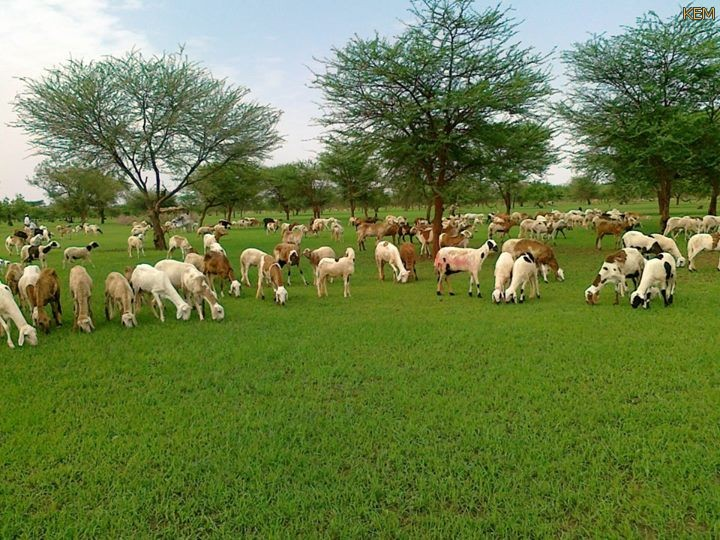
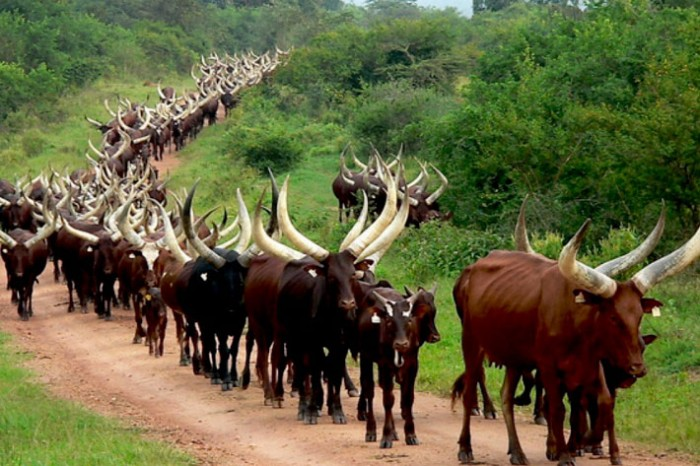
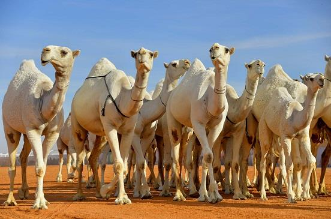
Animal and Fish wealth:
Sudan’s animal wealth far exceeds that of the Arab countries and is Africa’s second largest.
The national herd is estimated around 140 million heads of cattle (cows, camels, sheep, goats,
horse spices and poultry birds). Sudan also has an immense wealth of 106 fresh water species of the Nile,
the Red Sea that yields an annual stock estimated at more than 110 thousand tons of fish. In addition to this
is a wealth of wild animals from an assortment of species. Sudan’s numerous national reserves and parks house this
rich diversity of plant and animal life. It has 12 of the 13 orders of mammals found in Africa. To top it off, the
country is host to a staggering 1,931 bird species.
Among the various projects exploiting the wealth of livestock is the
Name of Project: Goat and Camel Husbandry:
Located in Wadi El-Khoy (Dongola Province)
Background of the Project:
Area: Proposed area 250 thousand feddan of arable land and free of restrictions.
Irrigation: The proposed area will be irrigated with a network of flood irrigation and to dig surface wells to provide water for man and animals.
Soil : The project is located in a level surface plain and the soil is composed of Nilotic sedimentaries.
Nature of Project: A new project, which obtained the approval of the competent authorities.
Project Objectives :
Parent production
Male export (sheep – billy goats camels).
Sale of improved surplus females to the local market.
Provision of work opportunities and settlement for the inhabitants of the state and the incoming nomads.
Support of the economies of the state and provision of hard currency from the export and provision of animals for the needs of the state.
Sudanese pyramids
About 220 pyramids were built in three areas of Nubia as tombs for kings and queens of Nabata and Mero, who ruled the kingdom of Kush. The first pyramids were built in the Kru region. The remains on the tombs of King Kashta and his son Biya or Benekhi, with shrines to commemorate Shabaka and Tannout Amani, and pyramids of 14 queens. Later pyramids were built in Nuri, on the west bank of the Nile in Upper Nubia


| Pictures Of Sudanese Pyramids |
Nubian pyramids are pyramids that were built by the rulers of the ancient Kushite kingdoms.
The area of the Nile valley known as Nubia, which lies within present day Sudan, was home to three Kushite kingdoms during antiquity. The first had its capital at Kerma (2500–1500 BC). The second was centered on Napata (1000–300 BC). Finally, the last kingdom was centered on Meroë (300 BC–AD 300). They are built of granite and sandstone.
Kerma was Nubia's first centralized state with its own indigenous forms of architecture and burial customs. The last two kingdoms, Napata and Meroë, were heavily influenced by ancient Egypt culturally, economically, politically, and militarily. The Kushite kingdoms in turn competed strongly with Egypt economically and militarily. In 744 BC, the Kushite king Piankhi overthrew the 24th Dynasty and united the entire Nile valley from the delta to the city of Napata under his rule. Piankhi and his descendants ruled as the pharaohs of the Twenty-fifth Dynasty. Napatan control of Egypt ended after being conquered by Assyria in 656 BC. The Nubian pyramids are recognized as a UNESCO World Heritage Site.[1]
The Nile River
The Nile is the longest river in the world and is located in the continent of Africa and flows to the north. It has two major rivers, the White Nile and the Blue Nile. The White Nile is located in the Great Lakes region of Central Africa, the farthest source in southern Rwanda at the coordinates
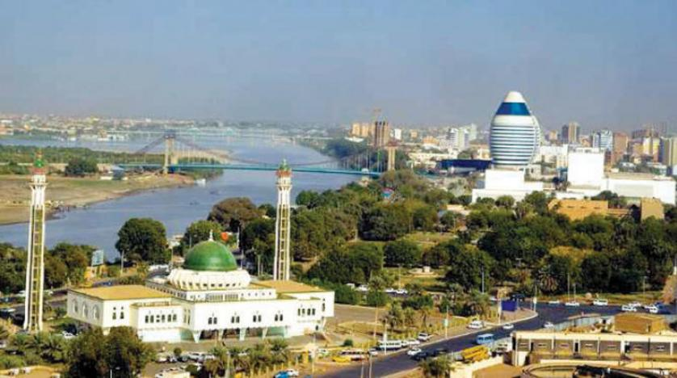
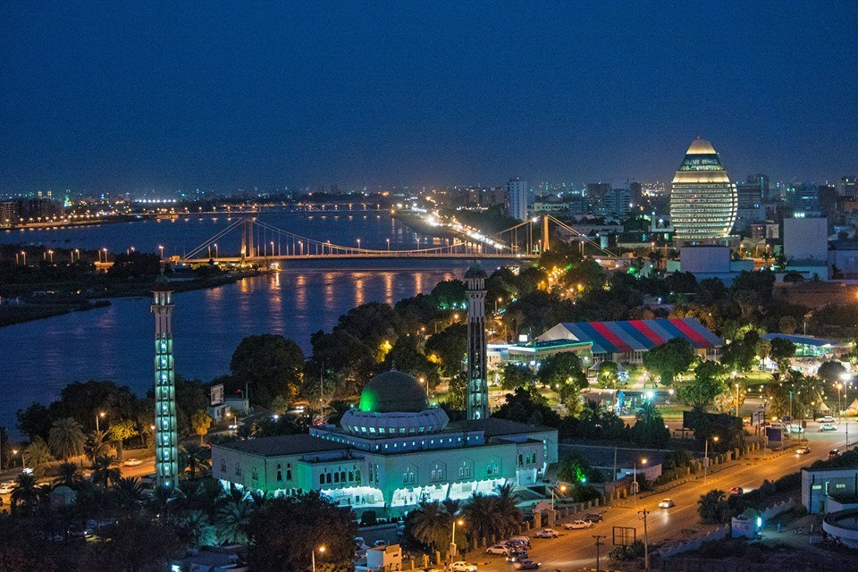
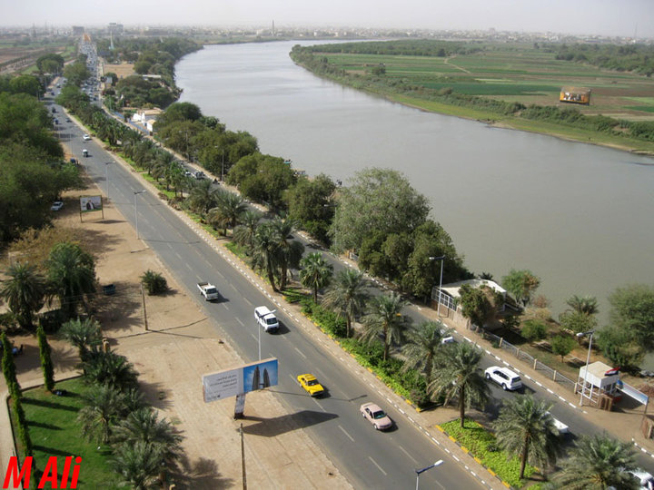
| Nile (daytime) |
Nile at night |
The Nile Niver |
The Nile (Arabic: النيل, written as al-Nīl, pronounced as an-Nīl) is a major north-flowing river in northeastern Africa, and is the longest river in the world,[1] though some sources cite the Amazon River as the longest.[2] The Nile, which is 6,853 km (4,258 miles) long, is an "international" river as its drainage basin covers eleven countries, namely, Tanzania, Uganda, Rwanda, Burundi, the Democratic Republic of the Congo, Kenya, Ethiopia, Eritrea, South Sudan, Republic of the Sudan and Egypt.[3] In particular, the Nile is the primary water source of Egypt and Sudan.[4]
The river Nile has two major tributaries, the White Nile and Blue Nile. The White Nile is considered to be the headwaters and primary stream of the Nile itself. The Blue Nile, however, is the source of most of the water and silt. The White Nile is longer and rises in the Great Lakes region of central Africa, with the most distant source still undetermined but located in either Rwanda or Burundi. It flows north through Tanzania, Lake Victoria, Uganda and South Sudan. The Blue Nile begins at Lake Tana in Ethiopia[5] and flows into Sudan from the southeast. The two rivers meet just north of the Sudanese capital of Khartoum.[6]
The northern section of the river flows north almost entirely through the Sudanese desert to Egypt, then ends in a large delta and flows into the Mediterranean Sea. Egyptian civilization and Sudanese kingdoms have depended on the river since ancient times. Most of the population and cities of Egypt lie along those parts of the Nile valley north of Aswan, and nearly all the cultural and historical sites of Ancient Egypt are found along riverbanks
Dinder National Park
The National Endowment or Aldender National Reserve is a natural reserve on the border between Sudan and Ethiopia. It is unique to many wild animals and birds, and like other reserves it preserves this national wealth. Named a reserve for the River Dender .
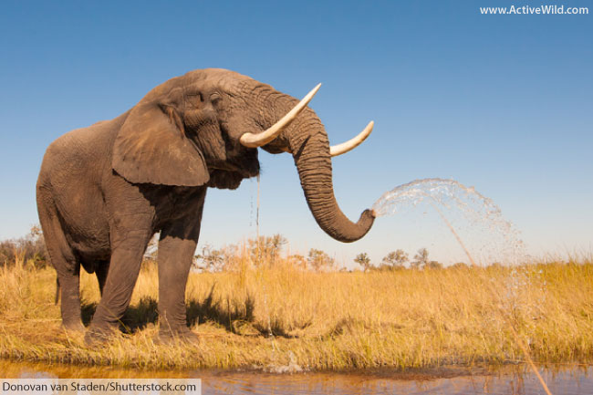
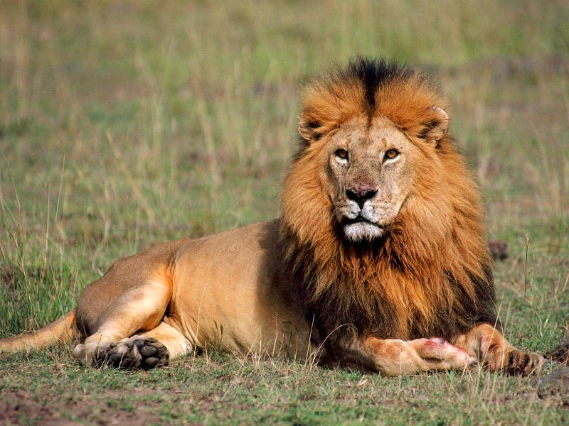
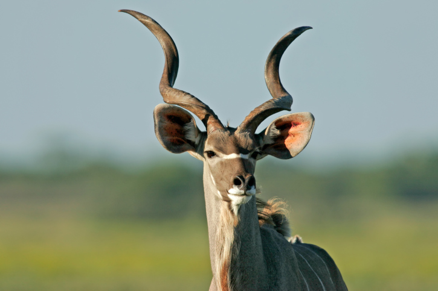
location
It is located on the Sudanese-Ethiopian border between latitudes 12 ° 26 'N and 12 ° 42' N and long lines 34 ° 48 'E, 35 ° 02' E. The Dender is protected as a national reserve in early 1935. It is estimated at an area of 10292 km2 and the protected area of Khartoum is 300 square miles.
Located in the intersections of three states are the state of Sennar Blue Nile State and the state of Gedaref and are the rivers of Al-Rashad and Aldandar are seasonal (from July to November) as well as Khor Kalko, and crossing the barn in some of the ponds known as watermelons are places that hold water in Droughts of rivers such as the eye of the sun and other places of water for animals. The reserve has a large flora and fauna.
The period from January to April is one of the best periods to visit the unique location, where grasslands, vegetation and jungles cover rivers, ponds, lakes and rivers, creating an environment suitable for breeding animals. And allow tourists to discover the richness of pristine nature.
Copyright © 2018 , My Sudan
All rights reserved
developed & maintained by Muaz idris